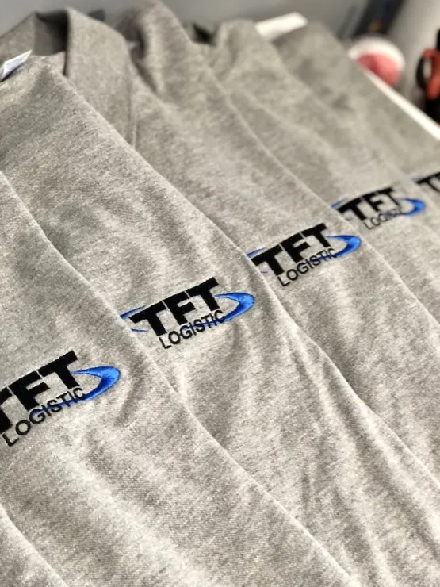
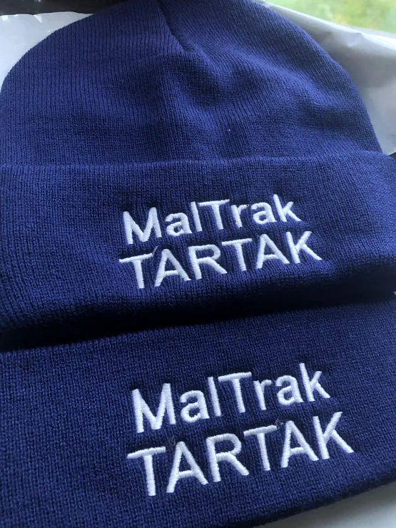
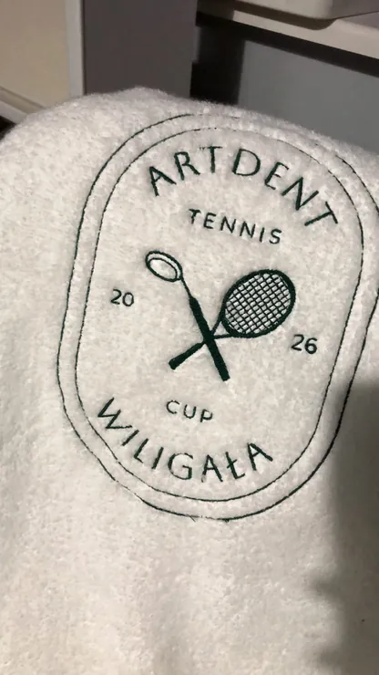
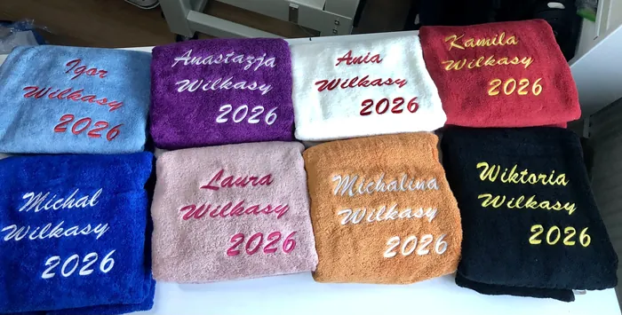
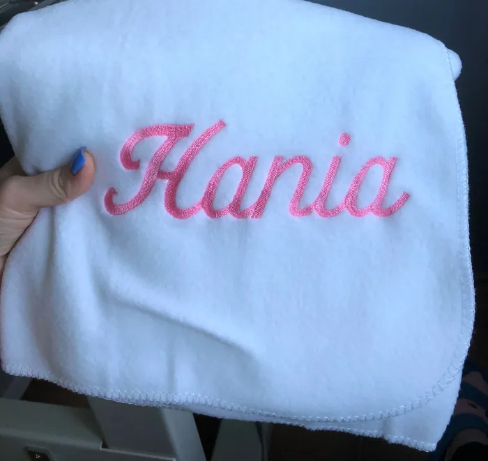
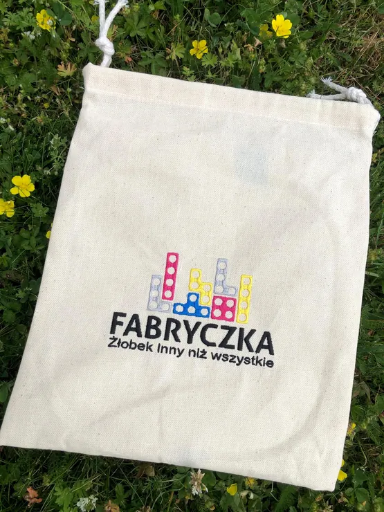

Odzież firmowa
Logo na odzieży TFT Logistic
Powtarzalny haft firmowy na kilku sztukach odzieży.
Wybrane zamówienia wykonane w naszej pracowni. Pokazujemy prawdziwe fotografie, strukturę haftu i różne zastosowania znakowania tekstyliów.

Powtarzalny haft firmowy na kilku sztukach odzieży.

Biały haft na granatowej dzianinie.

Seria bawełnianych worków z kolorowym oznaczeniem.

Kilka wariantów kolorystycznych odzieży z haftem.

Oznaczenie wydarzenia sportowego na materiale frotte.

Komplet ręczników z imionami i motywem okolicznościowym.

Imię wyhaftowane różową nicią na jasnym materiale.

Przykład haftu na jasnym worku tekstylnym.
Możesz zamówić znakowanie odzieży firmowej, czapek i ręczników. Projekty omawiamy indywidualnie, także przy zamówieniach wysyłkowych z całej Polski.